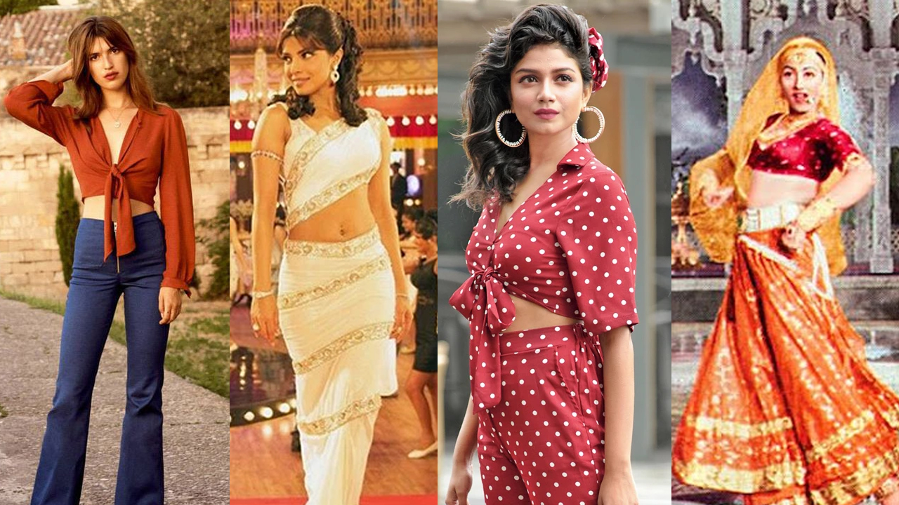
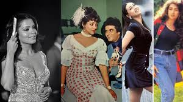
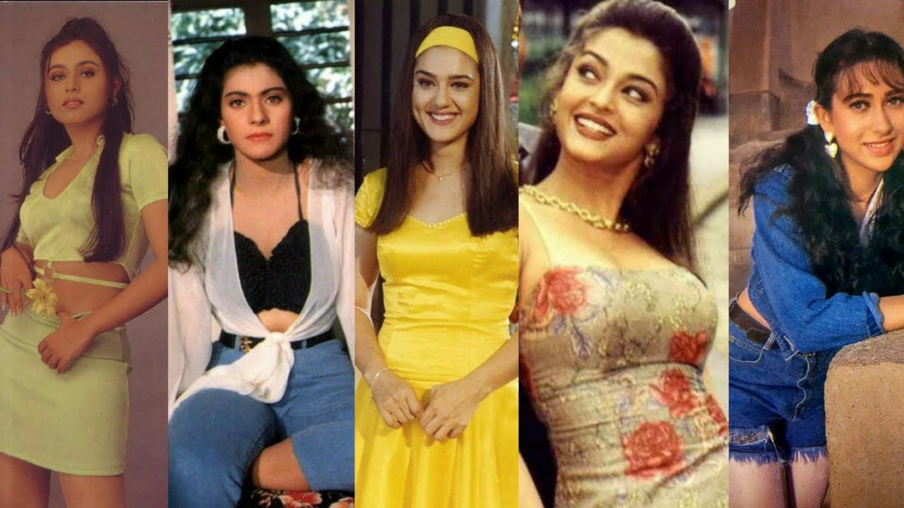
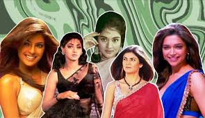

Hippie & Bohemian
The 70s saw Bollywood in full retro swing — Zeenat Aman’s bell-bottoms, Sharmila Tagore’s sarees with puffed sleeves, and Hema Malini’s vibrant lehengas. Flowing fabrics, oversized shades, and bohemian prints ruled the silver screen.
Glam & Power
Glittery chiffon sarees, heavy gold embroidery, and bold statement blouses — the 80s were loud, glamorous, and unapologetically extra. Rekha’s golden Kanjivarams and Sridevi’s dazzling sarees became the ultimate style goals.
Pop & Playful
Madhuri Dixit’s iconic Anarkalis, Karisma Kapoor’s mini dresses, and Raveena Tandon’s denim jackets created a decade of playful experimentation. Neon colours, chokers, and flashy Bollywood dance costumes were everywhere.
Y2K Boldness
The early 2000s brought metallics, halter necks, and bold cuts. Kareena Kapoor’s "Poo" looks, Priyanka Chopra’s shimmering gowns, and Preity Zinta’s colourful sarees made Y2K Bollywood fashion a confident, daring era.
Glam Fusion

This decade blended high fashion with traditional grace. Deepika Padukone’s regal gowns, Sonam Kapoor’s experimental drapes, and Vidya Balan’s statement sarees reflected a time of global fashion influence and red carpet dominance.
Minimal & Sustainable

Eco-friendly fabrics, pastel tones, and chic minimalism took centre stage. Bollywood divas embraced both contemporary suits and understated sarees, proving sustainable fashion could still be drop-dead gorgeous.